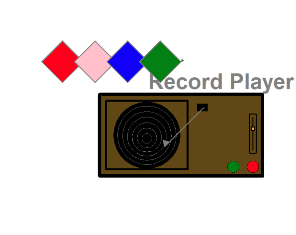
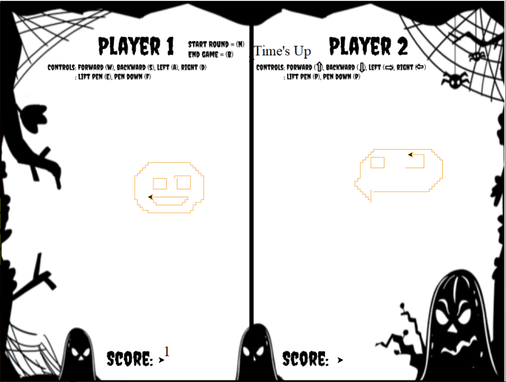
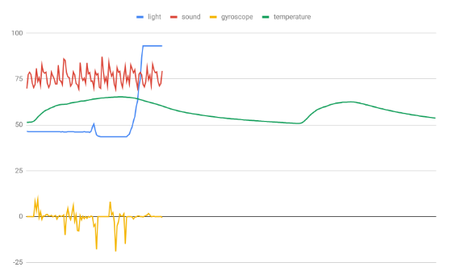
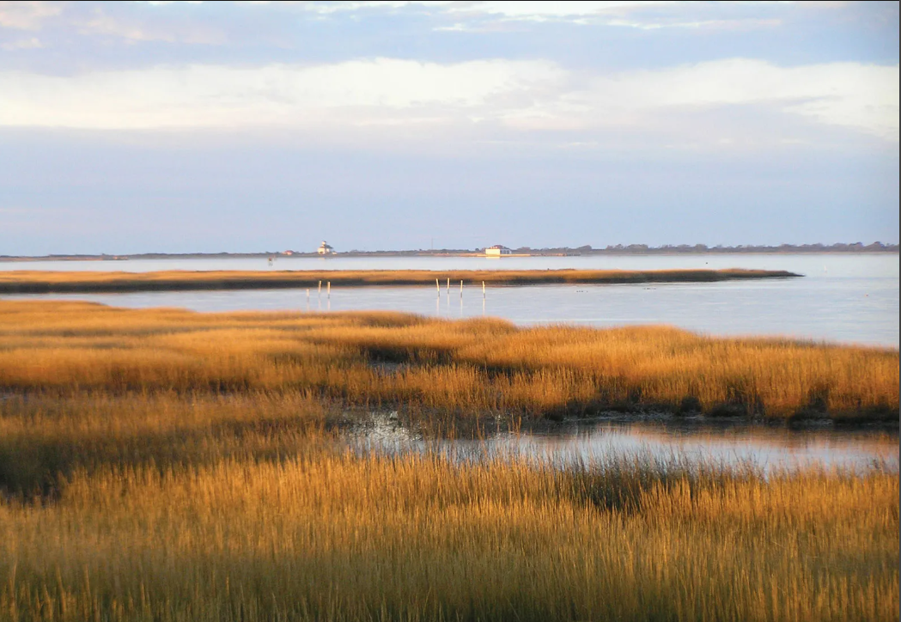
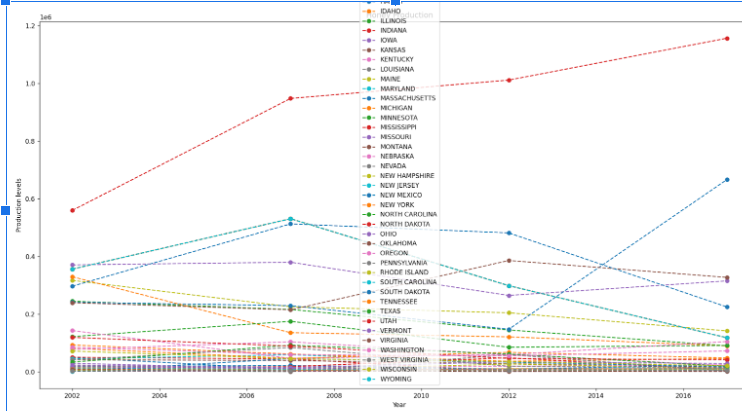

Home
Portfolio
About Me
Record Player game!

Create a record player with different options
Different color records. Have users pick the color record they want to play. We wanted users to connect with the code. It moves around when you type the color you want to play
The game we created is an online/similar version of Pictionary with 3 players. We made it to match the season. You can choose any color and control the movement of your drawing by using the up and down keys and (w,s,a,d)

Save the Character
Save the Character is a game that Protects the character through different terrains and from flying objects. Try to survive until the end.
Fish Tank Monitor
Debugged a program that was meant to monitor a fish tank

Peppered Moth
The Peppered Moth simulation models the population of different colored moths based on the environmental factor pollution.

3.16 Project
We think that it is Marsh Lands because our temperature graph was very smooth and constant, which fits the description accurately. Also, the varying sound graph with high maximums could be explained by the constant critter chirping and buzzing. Finally, the light graph was very constant and went from low to high, representing the planet going from night to day.


3.2.4 Project
The honey production is stable which shows that much of the production is regulated by the states.
